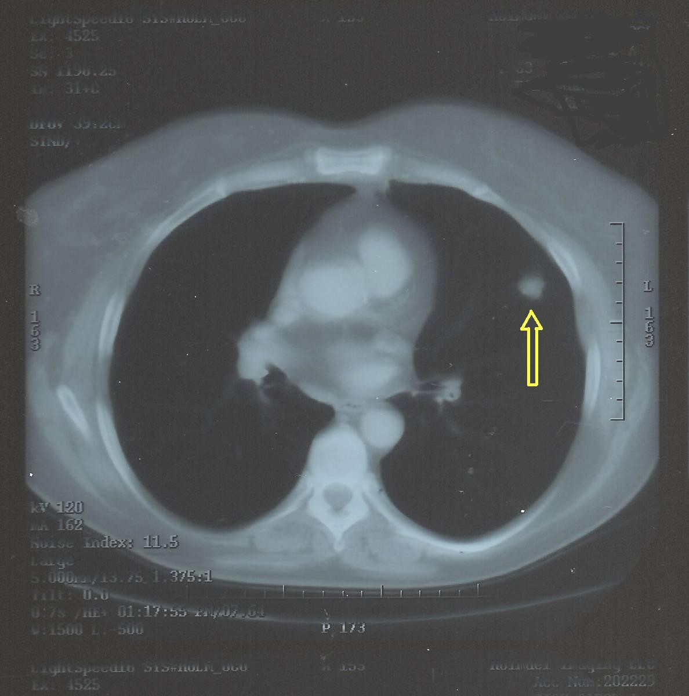

Ficha del catálogo
Nódulo pulmonar solitario: Caracterización y seguimiento
- Sistema
- Respiratorio
- Modalidad
- TC
- Región
- Tórax
- Dificultad
- Avanzado
Un nódulo pulmonar es una opacidad redondeada de hasta tres centímetros rodeada de parénquima aireado. La mayoría son benignos, pero la posibilidad de cáncer obliga a un algoritmo de caracterización y seguimiento basado en tamaño, densidad y riesgo del paciente. Es uno de los hallazgos incidentales más frecuentes en tomografía.
Técnica
Tomografía de tórax con cortes finos sin contraste, con mediciones reproducibles y comparación sistemática con todos los estudios previos disponibles.
Qué observar
- Tamaño medido en el eje mayor con cortes finos y ventana pulmonar
- Densidad: Sólido, subsólido con componente sólido o en vidrio deslustrado puro
- Márgenes lisos, lobulados o espiculados, siendo la espiculación signo de sospecha
- Presencia y patrón de calcificación, con patrones benignos definidos
- Grasa interna, muy sugestiva de hamartoma
- Estabilidad en el tiempo, criterio de benignidad cuando es prolongada en nódulos sólidos
Hallazgos
Opacidad nodular única con características de densidad, márgenes y calcificación que determinan su probabilidad de malignidad.
Perlas
Buscar estudios previos es la maniobra más rentable. Un nódulo sólido estable durante dos años es casi siempre benigno, pero los nódulos en vidrio deslustrado crecen muy despacio y requieren seguimientos más largos.
Diagnóstico diferencial
- Granuloma calcificado
- Calcificación central, laminada o completa con estabilidad prolongada.
- Hamartoma
- Contiene grasa y a veces calcificación en palomitas de maíz.
- Metástasis pulmonar
- Suelen ser múltiples, redondeadas y de predominio basal y periférico.
Simuladores
- Vaso visto de perfil
- Nódulo de pezón en la radiografía
- Placa pleural o lesión cutánea proyectada
Por modalidad
- RX
- Detección casual, baja sensibilidad para nódulos pequeños
- TC
- Caracterización, medición y seguimiento estandarizados
Protocolo
Cortes finos volumétricos sin contraste con reconstrucciones multiplanares. Los intervalos de seguimiento se establecen según tamaño, densidad y riesgo individual.
Clasificación
Existen sistemas estructurados que categorizan los nódulos por tamaño y densidad y asignan a cada categoría una recomendación de seguimiento o de estudio adicional.
Errores frecuentes
- Medir el nódulo en cortes gruesos o con ventana inadecuada
- No buscar estudios previos antes de recomendar seguimiento
- Aplicar a nódulos subsólidos los intervalos de los nódulos sólidos

nodulo pulmonar seguimiento espiculado vidrio deslustrado hamartoma granuloma cribado